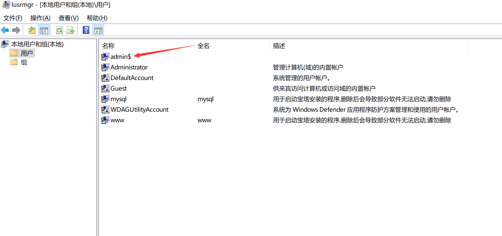
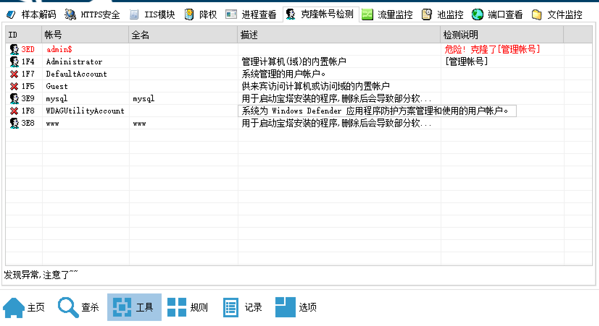
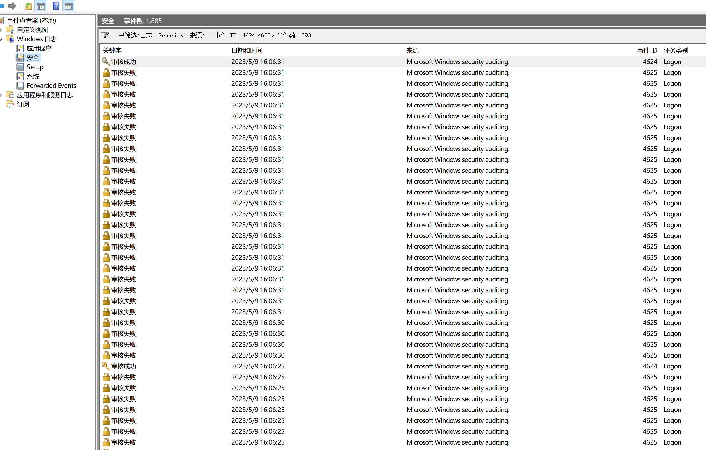
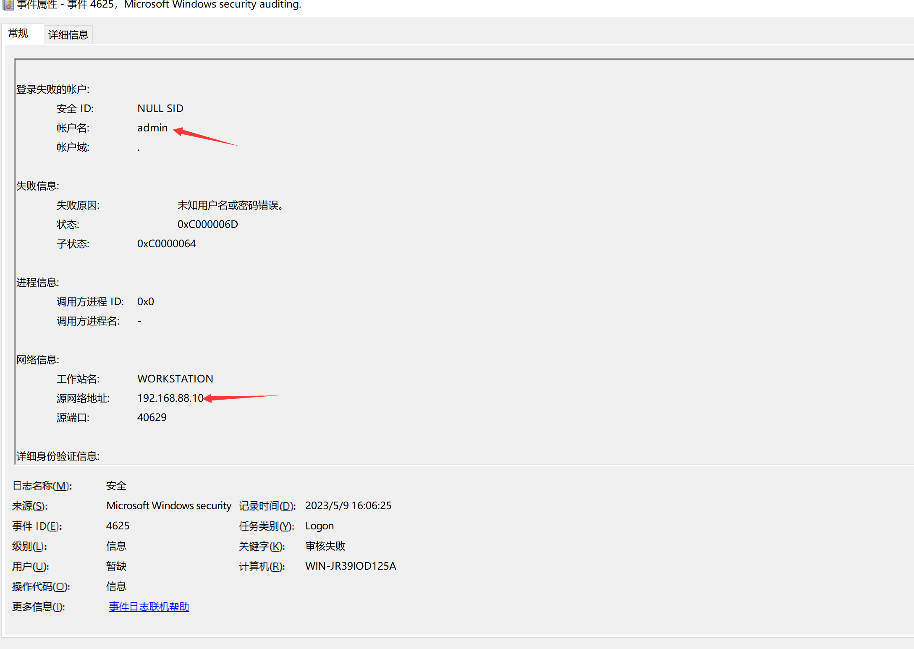
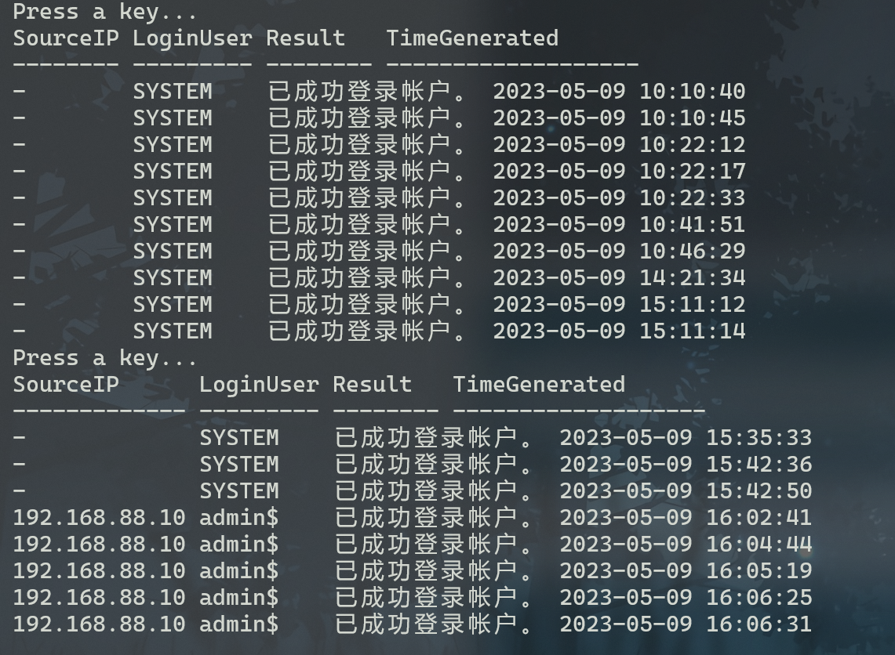
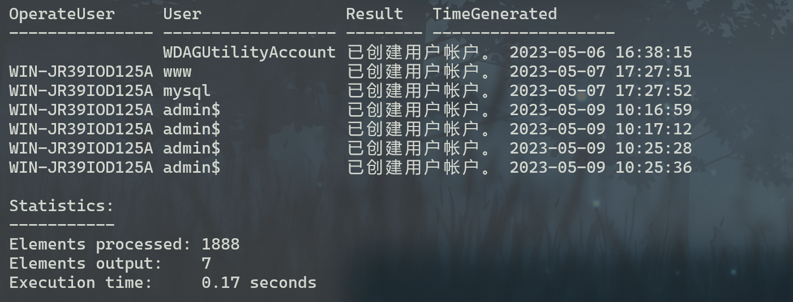
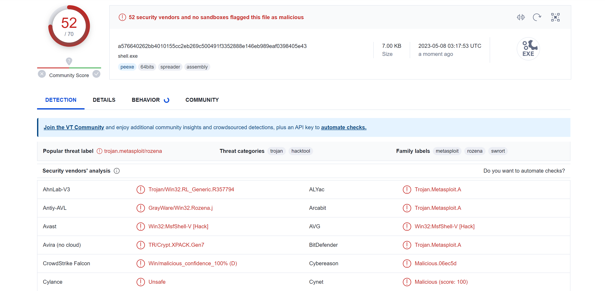
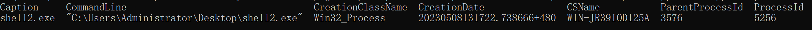
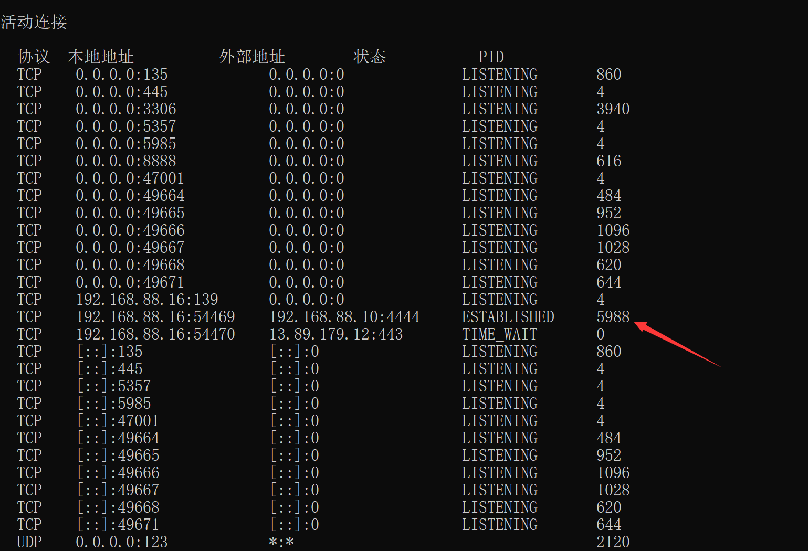

Windows应急响应笔记
可疑账号排查
0x01. 新增账号排查
1 | # 使用PowerShell获取所有用户列表 |

0x02. 隐藏账号排查
使用Ctrl + R运行lusrmgr.msc即可查看到隐藏账号

也可以重点关注Administrators组是否有新增管理员用户

0x03. 克隆账号排查
克隆账号无法通过上面的方法去排查，如下图看不到新增的用户admin$，不过当服务器重启后再次打开就能看到克隆账号

也可以直接通过D盾去发现异常账号

也可以通过注册表查看，但是需要修改权限，win + r运行regedt32，进入路径HKEY_LOCAL_MACHINE\SAM\SAM，若看不见则表明权限不够，对最后一个SAM鼠标右击添加可访问权限。

也可以直接通过命令去查询所有用户
1 | reg query HKEY_LOCAL_MACHINE\SAM\SAM\Domains\Account\Users\Names |

0x04. 暴力破解排查
总结一些可能会用的到的
EventId：
- 4624 登陆成功
- 4625 登陆失败
- 4634 账户已注销
- 4647 用户启动了注销
- 4672 使用管理员登陆
- 4720 创建用户
- 4722 启用账户
- 4723 更改账户密码
- 4724 重置账户密码
- 4726 账户已删除
- 4738 更改账户
- 4688 创建进程
- 4698 创建计划任务
- 4699 删除计划任务
- 4700 启动计划任务
打开终端输入eventvwr即可打开事件查看器，点击Windows日志->安全->筛选当前日志，事件ID输入4624-4625，可以查看登陆成功和登陆失败的日志。

随便点开一个详情即可看到事件的被爆破用户名、源IP、以及记录时间登信息

也可以将服务器的日志导出，直接通过微软的LogParser工具查询
1 | # 筛选登陆失败的所有日志 |

1 | # 查看用户登陆成功事件 |

1 | # 查看用户创建事件 |

后门程序排查
0x01. 反向连接
1 | # 查看当前网络连接状况是否存在可以连接 |
如下图所示，可以发现有服务器和其他主机有异常连接4444端口，连接状态为ESTABLISHED，若为木马则说明是反向连接类型

1 | # 记录两个可以的pid，并通过qprocess查看进程的详细信息 |

1 | # 也可以通过wmic查看更详细的信息 |

将样本放入virustotal进行检测，也可以通过逆向提取一些其他特征

1 | # 杀掉相关进程并保留所有信息 |
0x02. 正向连接
正向连接一般是在目标服务器无法出网的情况下会使用该方式获取shell，运作原理也是在目标服务器上监听一个端口，故排查思路是一样的。
1 | # 查看当前网络连接状况是否存在可以连接 |

1 | # 通过wmic查看文件路径 |

1 | # 杀掉相关进程并保留所有信息 |
0x03. 无文件落地
遇事不决，先看网络连接

利用wmic查看进程详细信息
1 | wmic process where processid=5988 get caption,commandline,creationclassname,creationdate,csname,processid,parentprocessid |

可以看出是一个无文件落地的powershell后门程序
自启动、计划任务排查
0x01. 自启动项目排查
检查注册表的开机启动项是否有异常项目，有则鼠标右击删除
1 | # 注册表查询开机自启动项是否有异常程序 |
检查目录C:\Users\Username\AppData\Roaming\Microsoft\Windows\Start Menu\Programs\Startup是否存在可疑脚本或程序
0x02. 计划任务排查
通过启动任务计划程序来查看异常计划任务的详细信息